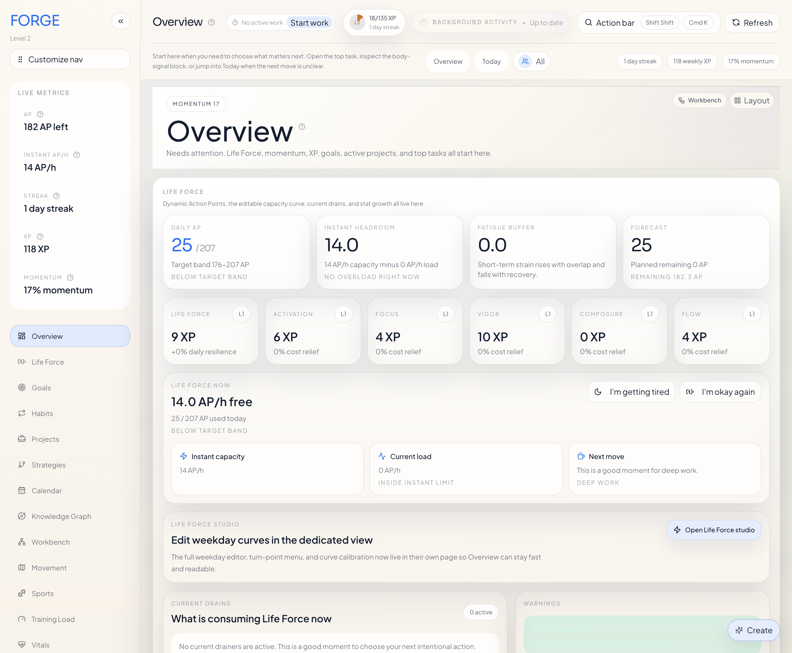
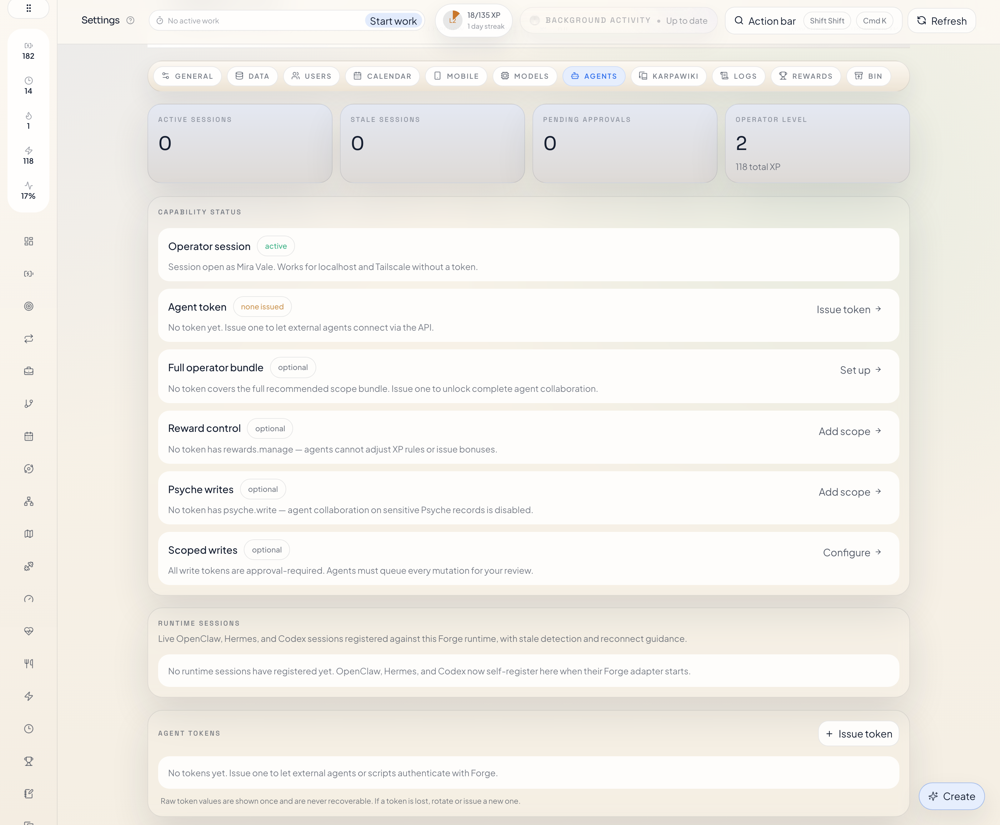
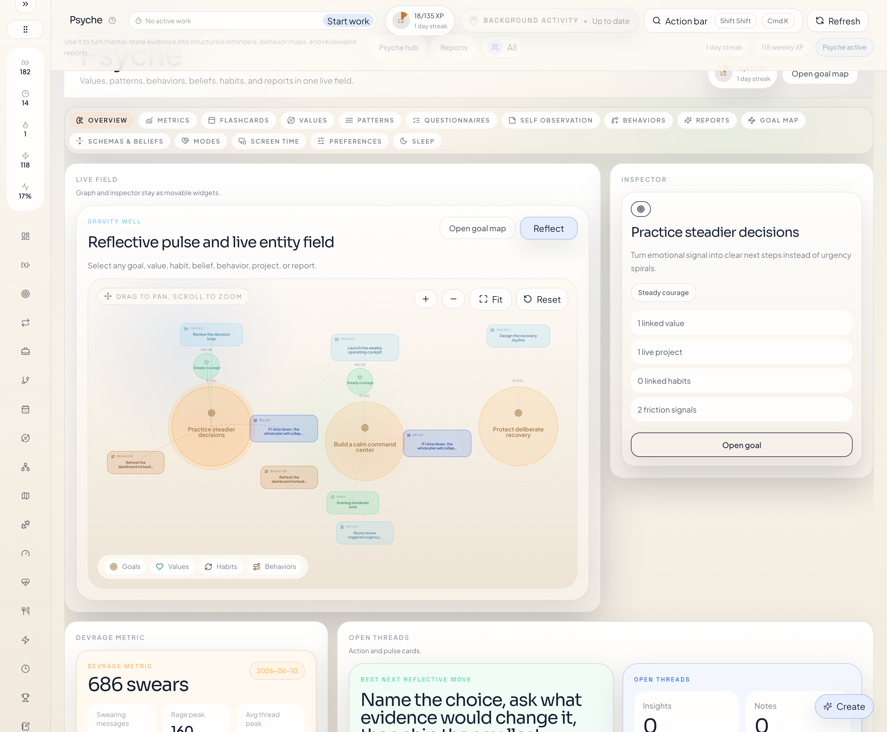
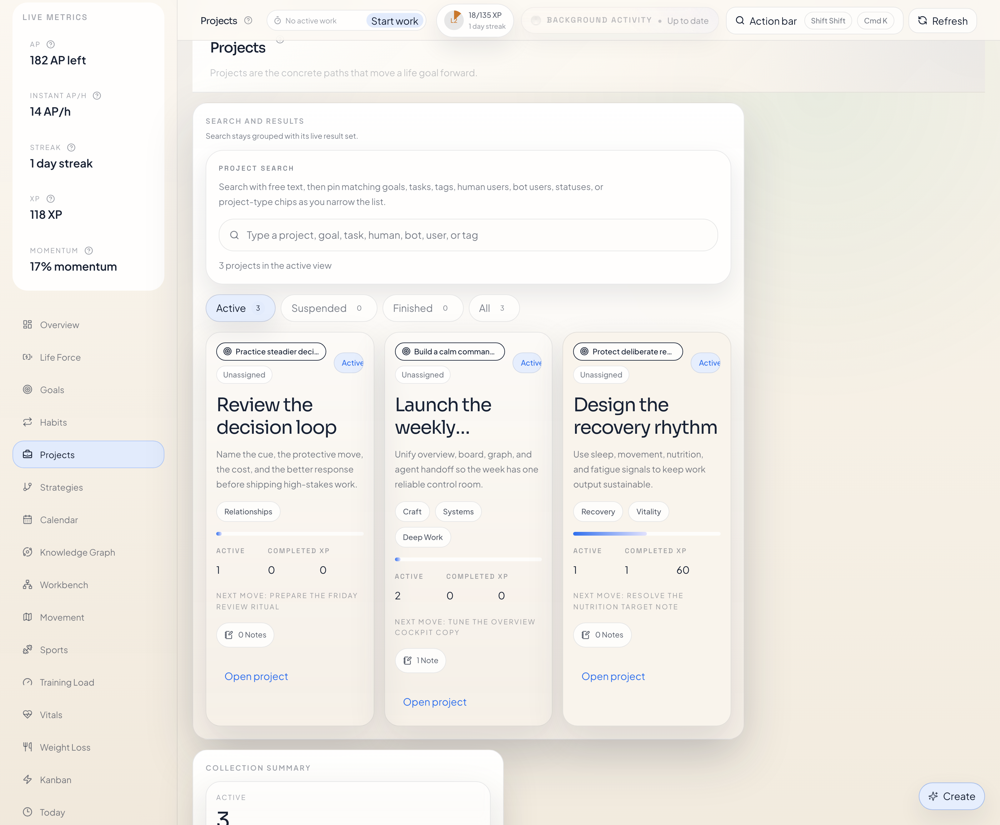
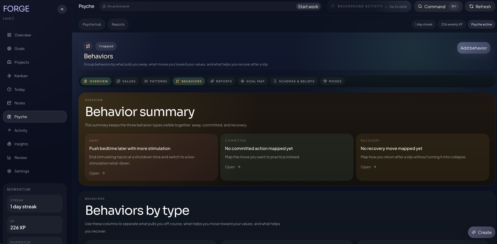

Create goals, projects, and tasks
Your agent can turn vague intentions into a clear structure: a goal, the projects under it, and the tasks that need to happen next.
Forge For OpenClaw
Without Forge, OpenClaw forgets work in chat. With Forge, it saves goals, tasks, and work sessions in a real workspace.
Tell your OpenClaw agent:
“Break this goal into a project and 5 tasks, then start a work
session.”
Forge creates the board, the tasks, and the session.

One Concrete Demo
Ask OpenClaw to break a goal into a project and five tasks, then start a work session. Forge turns that request into a real board with a live task run instead of leaving the plan stranded in chat.

Why It Matters
Open-ended chat is good for conversation. It is bad at staying a board, a backlog, or a work log after the thread moves on. Forge keeps the work in a persistent place the user can reopen, edit, and keep running.
Your agent can turn vague intentions into a clear structure: a goal, the projects under it, and the tasks that need to happen next.
Forge is not just storage. It has a real board with columns like backlog, focus, in progress, blocked, and done, so the work can actually move.
Work sessions are real timed runs. Your agent can start them, focus them, complete them, and Forge keeps the XP and review trail attached to what really happened. If minutes need to be corrected later, Forge also supports signed work adjustments on existing tasks and projects instead of faking a live session.
Notes, insights, values, beliefs, patterns, and trigger reports all stay linked to the work instead of getting lost in separate documents and chats.
Getting Started
This is the reliable local setup. The important part is that
enable is not enough on its own. After enabling the
plugin, make sure it is in the allow list, then restart OpenClaw
and verify that Forge really started.
openclaw plugins install forge-openclaw-plugin
openclaw plugins enable forge-openclaw-plugin
node -e 'const fs=require("fs"); const p=process.env.HOME+"/.openclaw/openclaw.json"; const j=JSON.parse(fs.readFileSync(p,"utf8")); j.plugins ??= {}; j.plugins.allow = Array.from(new Set([...(j.plugins.allow || []), "forge-openclaw-plugin"])); fs.writeFileSync(p, JSON.stringify(j, null, 2)+"\n");'
openclaw gateway restart
openclaw forge health
openclaw forge statusInstall the published package, then enable it in OpenClaw.
Some OpenClaw builds leave the plugin enabled but not allowed.
The Node command above appends
forge-openclaw-plugin without breaking the rest of
your allow list.
Restart the gateway so the plugin entrypoint and the local Forge runtime load for real.
Open OpenClaw -> Agents, choose the agent
you actually use, and turn on all the tool cards under
forge-openclaw-plugin. If those toggles stay off,
the agent can act like Forge does not exist even when the
plugin and runtime are healthy.
openclaw forge health checks the server.
openclaw forge status tells you whether Forge is
running, healthy, and managed by the plugin.
Ask your OpenClaw agent to open Forge or give you the local
address. The normal local UI address is usually
http://127.0.0.1:4317/forge/.
If 4317 is already taken, Forge can move to the
next free local port and remember that choice for future runs.
On a normal install, Forge usually stores its SQLite data under
~/.openclaw/extensions/forge-openclaw-plugin/data/forge.sqlite.
If you want the data somewhere else, set
dataRoot in the plugin config and restart the
gateway.
Check the runtime log at
~/.openclaw/logs/forge-openclaw-plugin/<host>-<port>.log.
That log captures the Forge child process output, which is the fastest way to see port errors, missing dependencies, or runtime crashes.
What It Looks Like

More Product Surfaces
These two screens show that more directly: one on the execution side with a real project board and linked notes, and one on the Psyche side with behavior mapping tied to values and recovery.


What The Agent Can Save
The names stay literal. A goal is a goal. A project is a project. A task is a task. That keeps the product easy to understand and makes the agent’s actions easy to check afterward.
Long-term directions you care about, such as health, family, money, or creative work.
Concrete bodies of work that move one goal forward.
Specific actions inside projects that can be scheduled, moved, started, and completed.
Real work sessions with real time, focus state, and completion history.
Markdown notes that can attach to one or many records as evidence, handoff, or context.
Saved observations or recommendations from you or a trusted agent.
Important directions or principles you want your actions to reflect.
Explicit belief sentences that shape behavior, for better or worse.
Repeating loops with triggers, actions, short-term payoff, and long-term cost.
Structured records of emotionally important episodes, including what happened and what followed.
Why Psyche Matters
The Psyche side of Forge is explicitly influenced by third-wave CBT, ACT, and schema therapy. In plain language, that means it helps you and your agent save values, beliefs, modes, patterns, and trigger reports in a way that is structured enough to stay useful over time.
Open-ended conversation is good at nuance and flexible expression. Forge adds a clearer store for things like recurring beliefs, behavior patterns, values, and trigger reports when those should stay stable and reviewable over time.
Psyche records are not meant to float separately from the rest of the product. They can stay linked to goals, projects, tasks, notes, and reports so reflection stays connected to what is happening in your life and work.
Forge does not pretend to replace therapy. What it does do is give you a clean place to save the kind of structured material that shows up in CBT, ACT, and schema work: values, thoughts, beliefs, coping modes, patterns, and trigger episodes.
Real Examples
These are normal, concrete things you can ask for. The value is that the agent does not just answer you in chat. It can save the result in a workspace that you can open and keep using.
You tell the agent:
I want to get in shape and stop improvising my health.
It can create a goal like
Build a stable, healthy body, add a project like
Spring training block, and create the first tasks
under it.
When you open Forge later, the goal, project, and tasks are already connected.
Forge tasks live on a real board with columns like backlog,
focus, in progress, blocked, and done. Your agent can help you
inspect that state and update tasks like
Write plugin install guide so the board reflects
the actual work.
The Kanban board is one of the main reasons Forge exists, so it should be named directly and shown early, not buried behind abstract product talk.
You tell the agent to start work on
Refactor Forge install docs. Forge starts a real
task run, records the session, and keeps it visible as your
current work until you release or complete it.
This is not just changing a task status. It is recording an actual work session.
Forge tracks the work sessions and completions, then shows the XP and review trail. That lets your agent answer with more than vibes. It can point to actual work that happened.
If work already happened away from the live timer, Forge can add or remove tracked minutes on an existing task or project. The correction is explicit, clamped so tracked time cannot go negative, and the XP shift stays explainable.
That is a different path from starting a live task run or logging a finished work item after the fact.
After finishing Write plugin install guide, your
agent can save a note with what changed, what still feels risky,
and which commands were tested. That note stays linked to the
task, project, or goal instead of disappearing in chat history.
You notice a repeating loop: when release steps feel messy, you delay them, then feel shame, then avoid the task even more. Forge lets your agent save that as a pattern, link it to a belief, and attach a trigger report when a real episode happens.
That way the reflection side of Forge is still tied to the real work side.
Commands
openclaw forge health
openclaw forge statusopenclaw forge start
openclaw forge stop
openclaw forge restart
openclaw forge statusopenclaw config get plugins.allow --jsontail -n 120 ~/.openclaw/logs/forge-openclaw-plugin/<host>-<port>.logFAQ
The most common cause is that the plugin was installed and
enabled, but not added to plugins.allow. Run the
full install flow above, especially the allow-list repair
command, then restart the gateway.
Check OpenClaw -> Agents first. The Forge
plugin can be installed, enabled, and healthy while the agent
still has the forge-openclaw-plugin tools turned
off on the agent tool page. Turn on all Forge tool cards for
the agent you are actually using, then try again.
Use live task runs when the work is happening now. Use
log work when the work already happened and should
be recorded as a finished work item. Use adjust work
when the task or project already exists and only the tracked
minutes need to move up or down.
If something else already uses 4317, Forge can move
to the next free local port. Use
openclaw forge status to see the actual base URL it
chose.
Yes. Set dataRoot in the Forge plugin config,
restart the gateway, and Forge will use that folder instead of
its default runtime path.
Read the runtime log at
~/.openclaw/logs/forge-openclaw-plugin/<host>-<port>.log. It captures the child process output from the actual Forge
server.
Source
If you want the package, use npm. If you want the source, docs, screenshots, or local development path, use the repository.